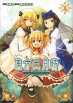
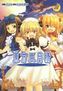
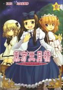

- Welcome to Touhou Wiki!
- Please register to edit. For assistance, check in with our Discord server or IRC channel.
Strange and Bright Nature Deity
| 東方三月精 Strange and Bright Nature Deity | |
|---|---|
|
 | |
| Publisher | |
| Released |
May 2006 through January 2009 |
| Writers | |
| Illustrators | |
| Chapters |
25 + 3 extras |
| Followed by | |
| Comes with |
Strange and Bright Nature Deity 1 (CD), Strange and Bright Nature Deity 2 (CD), Strange and Bright Nature Deity 3 (CD) |
Touhou
On Jan 26, 2008, the first volume of Strange and Bright Nature Deity went on sale. Volume 2 was released on Feb 18, 2009, and volume 3 was released on August 28, 2009. Each volume came with a CD (1, 2, 3).
After 2009-05, the comic moved to the magazine Comp Ace and was renamed 東方三月精 ～ Oriental Sacred Place.
Contents
- 1 Read online (complete)
- 2 Compilation Version
- 3 Strange and Bright Nature Deity Vol.1
- 3.1 SaBND Chapter One: Villa of the Rainy Season (May 26, 2006)
- 3.2 SaBND Chapter Two: The Melancholy of Ghosts (July 26, 2006)
- 3.3 SaBND Chapter Three: Tall Grass Rabbit (September 26, 2006)
- 3.4 SaBND Chapter Four: Beyond the Incidents (December 26, 2006)
- 3.5 SaBND Chapter Five: Witches and Lies (First Part) (January 26, 2007)
- 3.6 SaBND Chapter Six: Witches and Lies (Latter Part) (February 26, 2007)
- 3.7 SaBND Chapter Seven: Spring's Illusion (First Part) (March 26, 2007)
- 3.8 SaBND Chapter Eight: Spring's Illusion (Latter Part) (April 26, 2007)
- 3.9 SaBND Volume 1 Extra: Make it Three Drinks
- 4 Strange and Bright Nature Deity Vol.2
- 4.1 SaBND Chapter Nine: The Delicate Kirisame (First Part) (May 26, 2007)
- 4.2 SaBND Chapter Ten: The Delicate Kirisame (Latter Part) (June 26, 2007)
- 4.3 SaBND Chapter Eleven: Xuanwu's Ravine (First Part) (July 26, 2007)
- 4.4 SaBND Chapter Twelve: Xuanwu's Ravine (Latter Part) (August 25, 2007)
- 4.5 SaBND Chapter Thirteen: The Strongest Storm (First Part) (September 26, 2007)
- 4.6 SaBND Chapter Fourteen: The Strongest Storm (Latter Part) (November 26, 2007)
- 4.7 SaBND Chapter Fifteen: The God and the Devil of the Sky (First Part) (December 26, 2007)
- 4.8 SaBND Chapter Sixteen: The God and the Devil of the Sky (Latter Part) (January 26, 2008)
- 4.9 SaBND Volume 2 Extra: The Great Fairy War
- 5 Strange and Bright Nature Deity Vol.3
- 5.1 SaBND Chapter Seventeen: The Worm Inside the Jar, the Wine Worm's Vase (First Part) (March 26, 2008)
- 5.2 SaBND Chapter Eighteen: The Worm Inside the Jar, the Wine Worm's Vase (Latter Part) (April 26, 2008)
- 5.3 SaBND Chapter Nineteen: The Terror of Monsters (First Part) (May 26, 2008)
- 5.4 SaBND Chapter Twenty: The Terror of Monsters (Latter Part) (June 26, 2008)
- 5.5 SaBND Chapter Twenty-One: The Largest Organism in the World (First Part) (July 26, 2008)
- 5.6 SaBND Chapter Twenty-Two: The Largest Organism in the World (Latter Part) (August 26, 2008)
- 5.7 SaBND Chapter Twenty-Three: The Two Worlds (First Part) (October 25, 2008)
- 5.8 SaBND Chapter Twenty-Four: The Two Worlds (Second Part) (December 26, 2008)
- 5.9 SaBND Chapter Twenty-Five: The Two Worlds (Final Part) (January 26, 2009)
- 5.10 SaBND Volume 3 Extra Omake: An everyday of the Three Fairies
- 6 Additional Information
- 7 See also
- 8 References
Read online (complete)[edit]
MangaDex: Touhou Sangetsusei ~ Strange and Bright Nature Deity.
Released by Gaku Gaku Animal Land and UMAD SCANS.
Compilation Version[edit]
SaBND Complete
Compilation of all the chapters (Cardcaptor/Mysterio006/Nietz/UMAD Scans/Gaku-Touhou)
Strange and Bright Nature Deity Vol.1[edit]
| 東方三月精 Strange and Bright Nature Deity Vol. 1 | |
|---|---|
|
| |
| Released |
January 26, 2008 |
| Writers | |
| Illustrators | |
| Chapters |
8 + Extra |
| Followed by |
Strange and Bright Nature Deity Vol.2 |
| Comes with | |
| ISBN | |
SaBND Chapter One: Villa of the Rainy Season (May 26, 2006)
Translated by Cardcaptor, edited by Mysterio006
Download
Summary: The three fairies tire of the rainy season and try to stay in the Scarlet Devil Mansion for free.
SaBND Chapter Two: The Melancholy of Ghosts (July 26, 2006)
Translated by Cardcaptor, edited by Mysterio006
Download
Summary: The fairies battle the summer heat by catching a few ghosts.
SaBND Chapter Three: Tall Grass Rabbit (September 26, 2006)
Translated by Cardcaptor, edited by Mysterio006
Download
Summary: The fairies are chasing rabbits in the Bamboo Forest of the Lost, only to get lost themselves and are discovered by another rabbit.
SaBND Chapter Four: Beyond the Incidents (December 26, 2006)
Translated by Nietz, edited by Mysterio006
Download
Summary: The fairies are hanging out near Muenzuka and run into Komachi.
SaBND Chapter Five: Witches and Lies (First Part) (January 26, 2007)
Translated by Nietz, edited by Mysterio006
Download (mirror)
Summary: Reimu is preparing a new ritual, while the fairies try to break into Alice's house.
SaBND Chapter Six: Witches and Lies (Latter Part) (February 26, 2007)
Translated by Nietz, edited by Mysterio006
Download
Summary: The three fairies meet Alice and have tea with her. Meanwhile, Reimu is experimenting with bullfinches in a new ritual.
SaBND Chapter Seven: Spring's Illusion (First Part) (March 26, 2007)
Translated by Nietz, edited by Mysterio006
Download
Summary: Spring is coming to Gensokyo, and rumors about Lily White are abound.
SaBND Chapter Eight: Spring's Illusion (Latter Part) (April 26, 2007)
Translated by Nietz, edited by Mysterio006
Download
Summary: Remilia wants to capture Lily White and sends Sakuya out to find her.
SaBND Volume 1 Extra: Make it Three Drinks
Translated by Nietz, edited by Mysterio006
Download
Summary: The fairies reminisce about the past few incidents and resolve to create one of their own. And they also get drunk.
Strange and Bright Nature Deity Vol.2[edit]
| 東方三月精 Strange and Bright Nature Deity Vol. 2 | |
|---|---|
|
 | |
| Released |
February 18, 2009 |
| Writers | |
| Illustrators | |
| Chapters |
8 + Extra |
| Followed by |
Strange and Bright Nature Deity Vol.3 |
| Comes with | |
| ISBN | |
SaBND Chapter Nine: The Delicate Kirisame (First Part) (May 26, 2007)
Translated by Nietz, edited by Mysterio006
Download
Summary: The fairies' home is covered in vines, and they end up going to Marisa for help.
SaBND Chapter Ten: The Delicate Kirisame (Latter Part) (June 26, 2007)
Translated by Nietz, edited by Mysterio006
Download
Summary: Marisa and the fairies find out that the vines were controlled by a tsuchinoko, and Marisa decides to keep it as a pet.
SaBND Chapter Eleven: Xuanwu's Ravine (First Part) (July 26, 2007)
Translated by Nietz, edited by Mysterio006
Download
Summary: The three fairies explore Genbu Ravine looking for a shining moss after hearing about it at the Hakurei Shrine.
SaBND Chapter Twelve: Xuanwu's Ravine (Latter Part) (August 25, 2007)
Translated by Nietz, edited by Mysterio006
Download (mirror)
Summary: The fairies look through the ravine again in search of the glowing moss.
SaBND Chapter Thirteen: The Strongest Storm (First Part) (September 26, 2007)
Translated by Nietz, edited by Mysterio006
Download (mirror)
Summary: The three meet Cirno while she was playing hide-and-seek.
SaBND Chapter Fourteen: The Strongest Storm (Latter Part) (November 26, 2007)
Translated by Nietz, edited by Mysterio006
Download (mirror)
Summary: The fairies enlist Cirno's powers in their latest prank on Reimu.
SaBND Chapter Fifteen: The God and the Devil of the Sky (First Part) (December 26, 2007)
Translated by DamageDesu (UMAD Scans), Nietz (Gaku-Touhou), edited by Hong Meiling 門門 (UMAD Scans), Mysterio006 (Gaku-Touhou)
Download (mirror)
Summary: The Scarlet Devil Mansion celebrates the new year while the fairies head to the Hakurei Shrine.
SaBND Chapter Sixteen: The God and the Devil of the Sky (Latter Part) (January 26, 2008)
Translated by DamageDesu (UMAD Scans), Nietz (Gaku-Touhou), edited by Hong Meiling 門門 (UMAD Scans), Mysterio006 (Gaku-Touhou)
Download (mirror)
Summary: Reimu prepares a ritual to prevent the "year of the youkai", but the fairies pull one last prank of the year...
SaBND Volume 2 Extra: The Great Fairy War
Translated by DamageDesu (UMAD Scans), edited by Hong Meiling 門門 (UMAD Scans)
Download (mirror)
Summary: The three fairies try to start the "Great Fairy War", and attempt to enlist Cirno to their side.
Strange and Bright Nature Deity Vol.3[edit]
| 東方三月精 Strange and Bright Nature Deity Vol. 3 | |
|---|---|
|
 | |
| Released |
August 28, 2009 |
| Writers | |
| Illustrators | |
| Chapters |
9 + Extra Omake |
| Followed by | |
| Comes with | |
| ISBN | |
SaBND Chapter Seventeen: The Worm Inside the Jar, the Wine Worm's Vase (First Part) (March 26, 2008)
Translated by DamageDesu (UMAD Scans), Nietz (Gaku-Touhou), edited by Hong Meiling 門門 (UMAD Scans), Nietz (Gaku-Touhou)
Download (mirror)
Summary: Reimu gets a jar from Suika, who tells her it will contain sake after a day. The fairies steal the jar from Reimu and run into Reisen and Eirin.
SaBND Chapter Eighteen: The Worm Inside the Jar, the Wine Worm's Vase (Latter Part) (April 26, 2008)
Translated by DamageDesu (UMAD Scans), Nietz (Gaku-Touhou), edited by Hong Meiling 門門 (UMAD Scans), Nietz (Gaku-Touhou)
Download (mirror)
Summary: Eirin treats the three fairies at her clinic and takes the jar as payment. It is revealed that the jar contains a sake bug.
SaBND Chapter Nineteen: The Terror of Monsters (First Part) (May 26, 2008)
Translated by DamageDesu (UMAD Scans), edited by Hong Meiling 門門 (UMAD Scans)
Download (mirror)
Summary: The three fairies try to scare Reimu, but Reimu just beats them up. They are trying to think of a solution when Aya hears of their problem.
SaBND Chapter Twenty: The Terror of Monsters (Latter Part) (June 26, 2008)
Translated by DamageDesu (UMAD Scans), edited by Hong Meiling 門門 (UMAD Scans)
Download (mirror)
Summary: Aya tells Reimu about a tsukumogami called a "kamimai" that resides in newspapers and possesses other objects if the paper is left unread. Aya also gets the three fairies to help with her hoax.
SaBND Chapter Twenty-One: The Largest Organism in the World (First Part) (July 26, 2008)
Translated by DamageDesu (UMAD Scans), edited by Hong Meiling 門門 (UMAD Scans)
Download (mirror)
Summary: Lightning has struck an oak tree at the back of the Hakurei Shrine.
SaBND Chapter Twenty-Two: The Largest Organism in the World (Latter Part) (August 26, 2008)
Translated by DamageDesu (UMAD Scans), edited by Hong Meiling 門門 (UMAD Scans)
Download (mirror)
Summary: Reimu decides to enshrine the tree, and the fairies plan to make the tree into a summer home.
SaBND Chapter Twenty-Three: The Two Worlds (First Part) (October 25, 2008)
Translated by DamageDesu (UMAD Scans), edited by Hong Meiling 門門 (UMAD Scans)
Download (mirror)
Summary: It is a few months after the tree was hit. Reimu has abandoned the tree while the fairies are about to move into it.
SaBND Chapter Twenty-Four: The Two Worlds (Second Part) (December 26, 2008)
Translated by DamageDesu (UMAD Scans), edited by Hong Meiling 門門 (UMAD Scans)
Download (mirror)
Summary: Yukari decides to test the fairies to see if they are worthy of inhabiting the tree.
SaBND Chapter Twenty-Five: The Two Worlds (Final Part) (January 26, 2009)
Translated by DamageDesu (UMAD Scans), edited by Hong Meiling 門門 (UMAD Scans)
Download (mirror)
Summary: The fairies finish moving in, while Reimu, Marisa, and Yukari talk about why the tree has regrown so quickly.
SaBND Volume 3 Extra Omake: An everyday of the Three Fairies
Additional Information[edit]
Name and Concept[edit]
- The first volume of the series uses Touhou Sangessei (とうほうさんげっせい) in the title's furigana, while the second and third volumes use Touhou Sangetsusei (とうほうさんげつせい). Sangessei is most likely a misspelling, considering that it has only been used once, while Sangetsusei has been used in 東方三月精 ～ Eastern and Little Nature Deity and in 東方三月精 ～ Oriental Sacred Place.
Vol. 1 Clean Cover
Vol. 2 Clean Cover
Vol. 3 Clean Cover
See also[edit]
References[edit]
| ||||||||||||||||||||||||||||